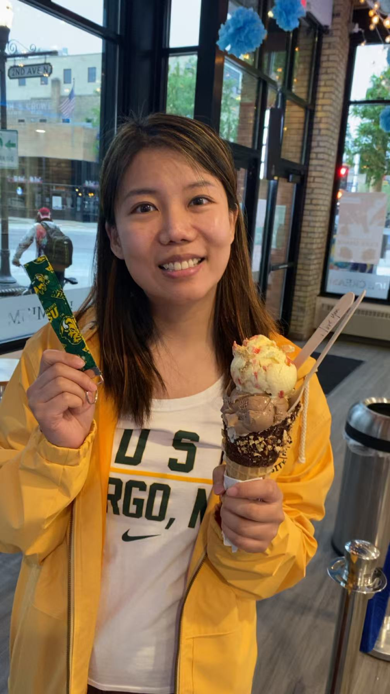

Hi, I'm Shuang 👋
Welcome to my personal portfolio! I'm a student passionate about software development.
Education / Experience
- NDSU — B.S. in Computer Science (expected 20XX)
- Relevant coursework:
- CSCI 474: Operating Systems Concepts
- CSCI 489: Social Implications of Computers
- CSCI 713: Software Development Processes
- CSCI 741: Algorithm Analysis
- Plant Science Research Assistant
- Computer Science Research Assistant
Projects
-
Bushel Capstone Project — A team capstone project developing a customer support and configuration dashboard for Bushel, a technology-enabled business platform. Built with React and Chakra UI following Figma designs. The application lets support staff look up companies by slug and view merged customer data pulled from multiple mock APIs (Aggregator, Legacy CRM, and ConfigCat), and compare configuration values across systems to quickly diagnose account issues. As part of a 4-person team, I led implementation of the configuration tables and reusable data-table components, handled row rendering and layout systems, and contributed to risk planning and API integration.
-
To-Do List App — A responsive to-do list web app built with HTML, CSS, and JavaScript, developed using AI coding tools. Supports adding, completing, deleting, and filtering tasks (All / Active / Completed). View on GitHub